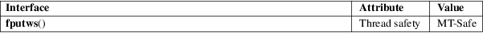

fputws − write a wide-character string to a FILE stream
Standard C library (libc, −lc)
#include <wchar.h>
int fputws(const wchar_t *restrict ws, FILE *restrict stream);
The fputws() function is the wide-character equivalent of the fputs(3) function. It writes the wide-character string starting at ws, up to but not including the terminating null wide character (L'\0'), to stream.
For a nonlocking counterpart, see unlocked_stdio(3).
The fputws() function returns a nonnegative integer if the operation was successful, or −1 to indicate an error.
For an explanation of the terms used in this section, see attributes(7).

C11, POSIX.1-2008.
POSIX.1-2001, C99.
The behavior of fputws() depends on the LC_CTYPE category of the current locale.
In the absence of additional information passed to the fopen(3) call, it is reasonable to expect that fputws() will actually write the multibyte string corresponding to the wide-character string ws.
fputwc(3), unlocked_stdio(3)